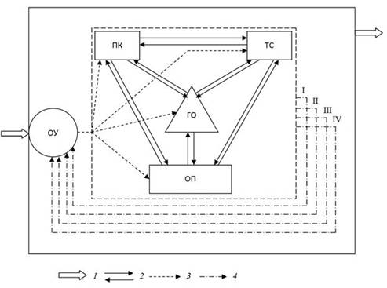

Рекреационная география в свете смены экономических систем в России (полемические результаты исследования) // Труды международной туристской академии. 2010 (в печати).
Г.П. Долженко, заведующий кафедрой общей географии, краеведения и туризма Южного федерального университета, действительный член Международной туристской академии.
Аннотация
Рассмотрены условия развития рекреационной географии в СССР в условиях административно-командной экономической системы и в Российской Федерации, в которой в настоящее время идет процесс формирования смешанной рыночной экономики. Показано, что территориальные рекреационные системы, гипотеза о которых была разработана в конце 60 –х гг. XX в., в настоящее время существовать не могут. Высказывается мнение о синонимичности терминов «рекреационный» и «туристский».
В 1972 г. в Известиях АН СССР была опубликована статья В.С. Преображенского, И.В. Зорина, Ю.А. Веденина «Географические аспекты конструирования новых типов рекреационных систем». Через три года вышла в свет подготовленная в Институте географии Академии наук СССР коллективная монография «Теоретические основы рекреационной географии» под редакцией В.С.Преображенского. Эти две работы создали основу теоретической базы новой научной дисциплины - «Рекреационная география», изучающей территориальные закономерности и особенности деятельности людей, направленной на восстановление и развитие физических и духовных сил.
Базовые положения рекреационной географии из монографии «Теоретические основы рекреационной географии» ( 1975 )
Предметом изучения рекреационной географии являются территориальные рекреационные системы (ТРС), представляющие собой социальные географические системы, состоящие из взаимосвязанных подсистем:
· природных и культурных комплексов;
· инженерных сооружений;
· обслуживающего персонала;
· органа управления;
· отдыхающих (рекреантов).
Особенность территориальных рекреационных систем заключается в их функциональной и территориальной целостности ( рис. 1 ).

Рис. 1. Схема территориальной рекреационной системы [ 1 ]
ПК - природные и культурные комплексы, ТС - технические системы, ОП - группа обслуживающего персонала, ОУ - орган управления, ГО - группа отдыхающих; 1 - внешние связи системы, 2 - связи между подсистемами, 3 - команды управления, 4 - информация о состоянии подсистем: I - об удовлетворенности отдыхающих, II - о степени сохранения соответствия природных комплексов требованиям отдыха, III - о степени сохранения полезных свойств и возможностях технических систем, IV - о состоянии обслуживающего персонала.
Основные задачи рекреационной географии:
· выявление закономерностей формирования, динамики, развития, разнообразия, распространения ТРС и их морфологической структуры;
· изучение территориальной дифференциации и интеграции, внутренних взаимосвязей, обусловливающих целостность ТРС; связей между ТРС; взаимодействия ТРС с другими географическими системами;
· прогнозирование спонтанных и целенаправленных действий;
· обеспечение общественной практики информацией о региональных особенностях ТРС [ 2 ].
К рекреационной географии проявили интерес на географических факультетах многих высших учебных заведений страны. В них развернулись работы по исследованию рекреационных возможностей своих регионов. В качестве примеров приведу несколько названий статей по рекреационной географии, написанных в 70-е гг. XX в., которые дают представление о темах, чаще других выполняемых учеными в этот период времени:
Хромов Ю.Б. Территориальная организация рекреационных систем в Ленинградской области (1978);
Чалая И.П. Типология рекреационных систем и планировочная организация (на примере Московской области) (1976);
Хоменко Ю.А. Планировочная организация Северо-Кавказской территориальной рекреационной системы (1978);
Малахов О.А. Территориальные рекреационные системы и вопросы охраны природной среды в Горном Алтае (1976).
Заведующий кафедрой географии мирового хозяйства МГУ, автор (совместно с И.Т. Твердохлебовывм) первой и долгое время остававшейся единственной монографией по рекреационной географии в СССР и современной России Н.С. Мироненко следующим образом оценивает временной период конца 60-х – начала 80-х гг. для рекреационной географии: «В развитии отечественной рекреационной географии особо выделяются 1960 – 1970 гг. как годы интенсивно проводящихся рекреационно-географических совещаний и первых полевых исследований на основе не только наблюдений, но и социологических, географически дифференцированных опросов, в частности на оз. Селигер и в одном из основных рекреационных регионов бывшей страны – Крыму.
Период наиболее активной работы протекал до начала 1980-х гг. Процесс формирования новой научной дисциплины шел настолько быстро, что можно говорить, с одной стороны, о смене парадигм в самой рекреационной географии, а с другой – о зарождении подлинной ветви социально-географических исследований, правда, хотя и в важной, но все же ограниченной сфере социалистического государства (но отнюдь не в сознании общества) – сфере отдыха.
Однако после почти двадцатилетнего интенсивного теоретического штурма и постоянного расширяющегося спектра эмпирических рекреационно-географических исследований с конца 1980 г. наступил период затишья» [ 3 ].
Возникновение, расцвет и время снижения интереса к рекреационной географии – все эти ее состояния приходятся на период господства административно-командной экономической системы в нашей стране и точно укладываются во временные рамки, так называемой, эпохи застоя (1964 - 1986 гг.).
Характерными чертами административно-командной системы являлись общественная (а в реальности государственная) собственность практически на все экономические ресурсы, сильная монополизация и бюрократизация экономики, централизованное, директивное экономическое планирование как основа хозяйственного механизма.
Этот хозяйственный механизм предполагал непосредственное управление всеми предприятиями из единого центра, полный контроль над производством и распределением продукции, руководство хозяйственной деятельностью, преимущественно, административно-командными (директивными) методами.
Рекреационная география, возникшая и развившаяся во времена административно-командной экономики в стране, была адекватным отображением социально-экономических реалий своей эпохи, в чем легко убедиться, взглянув через призму административно-командной системы на структуру и функционирование территориальных рекреационных систем.
Это особенно хорошо проявляется при анализе таких подсистем ТРС как «инженерные сооружения» и «орган управления». Подсистема «инженерные сооружения» (здания средств размещения, культурных центров, спортивная инфраструктура и др.) являлись собственностью профсоюзов ( но в действительности государства ), Госкоминтуриста СССР, БММТ «Спутник», различных министерств и ведомств, крупных предприятий, высших учебных заведений и др. Как руководящие органы ( центры) они направляли своим рекреационным предприятиям план по приему отдыхающих (рекреантов) и осуществляли контроль за его выполнением. Велась постоянная корректировка хозяйственной деятельности предприятий административно-командными методами, господствовавшими тогда в стране.
Анализ подсистемы «орган управления», без которой не мыслилось существование рекреационного региона, показывает, что в действительности ни одна из ТРС не имела единого органа управления. На ее территории одновременно действовало несколько управленческих структур, не связанных между собой: ЦСТЭ ВЦСПС, Госкоминтурист, БММТ «Спутник» и др., которые являлись органами управления для своих туристских предприятий.
Интерес представляют особенности поведения рекреантов в период централизованного руководства страной. Одной из них была низкая требовательность к качеству и ассортименту услуг в туризме. И это легко объяснялось. Большинство из рекреантов пользовались при приобретении путевок на туристские базы, в санаторно-лечебные учреждения и другие учреждения отдыха значительными льготами, воспринимаемые ими как щедрый подарок от государства. Так, в 1985 г. около 80% граждан из числа отдохнувших в здравницах профсоюзов получили путевки за счет средств социального страхования и государственного бюджета бесплатно или по льготным ценам с оплатой только 30 – 50% их стоимости [ 4 ].
Таким образом, идея о территориальных рекреационных системах могла оформиться только в эпоху административно-командной системы, господствующей в стране, с ее устремлением все ввести в управляемые рамки с центром, находящимся на вершине сформированной хозяйственной пирамиды.
После длительного господства административно-командной системы в экономике России на рубеже 80 - 90-х гг. начался переход экономики страны к рыночным отношениям. Стратегической целью переходного периода было формирование эффективной рыночной экономики с сильной социальной ориентацией. Условиями создания такой экономики являются:
· преобладание частной собственности;
· создание конкурентной среды;
· эффективная система социальной защиты;
· эффективное государство, обеспечивающее надежную защиту прав собственности и создающее условия для экономического роста [ 5 ].
Сложившаяся в нашей стране в первое десятилетие XXI в. модель рыночной экономики, получившая название «смешанная экономика», представляет собой рыночную систему со свойственной ей социальной ориентацией экономики и общества в целом. Она органично соединяет преимущества рыночной, административно-командной и даже традиционной экономики и тем самым в определенной степени устраняет недостатки каждой из них или смягчает их отрицательные последствия. Смешанная экономика носит многоукладный характер; ее основу составляет частная собственность, взаимодействующая с государственной.
Уже в переходный период в конце 80-х – начале 90-х гг. территориальные рекреационные системы времен административно-командной системы не соответствовали новым социально-экономическим особенностям страны. С развитием рыночных отношений в экономике России еще в переходный период стало появляться множество хозяйственно самостоятельных туристских организаций разной формы собственности – акционерные общества, общества с ограниченной ответственностью и др. Главные туристские организации Советского Союза – Центральный совет по туризму и экскурсиям ВЦСПС, Госкоминтурист СССР, БММТ «Спутник» ЦК ВЛКСМ распались на множество мелких и средних компаний.
Так, в хорошо знакомой автору Ростовской области в конце 80-х гг. уже активно работало несколько туристских кооперативов. Первым объявил о своем существовании кооператив, назвавшийся «Круизом», затем появились «Турист» при автотурбазе «Дон», «Глобус» при турбазе «Ростов-Дон», «Отдых» при БММТ «Спутник». Начали возникать туристские кооперативы не только в Ростове, но и в районных городах области: Цимлянске, Волгодонске, Азове и др. Основой их работы стала организация транспортных путешествий и отдыха на туристских базах, в пансионатах, гостиницах Северного Кавказа и на Черном море.
Эта деятельность по созданию частных туристских кооперативов могла начаться в стране только с переходом ее экономики на рыночные отношения, одним из важных условий становления которой является преобладание частной собственности.
В этот период продолжают развиваться деструктивные явления в подсистемах ТРС, обозначившиеся еще во времена административно-командной экономики. В первую очередь приобрела иной характер подсистема «инженерные сооружения». Произошла приватизация средств размещения и других инженерных сооружений, которые становясь частными, выходили из систем, не нуждаясь больше в директивных указаниях свыше.
Можно также считать, что произошла самоликвидация «органа управления», так как туризм стал регулируемой отраслью хозяйства, а не управляемой.
Туризм в конце XX в. в России из социального (им был преимущественно внутренний туризм) превратился в коммерческий. Материальная помощь при покупке туристской путевки оказывается в настоящее время крайне ограниченному числу граждан.
Таким образом, логичен вывод о том, что сегодня не может существовать территориальных рекреационных систем, созданных по образцам ТРС начала 70-х гг. XX в. А поскольку отсутствует предмет изучения рекреационной географии, каким являлись ТРС, соответственно и сама рекреационная география образца 70-80-х гг. должна либо уйти с поля науки, либо видоизмениться и найти себе новый предмет для изучения.
Таблица 1
Условия формирования рекреационной географии и предмет ее изучения
|
Периоды |
|
|
70 – 80 гг. XX в. |
90- гг. – современный период |
|
Страна |
|
|
Советский Союз |
Российская Федерация |
|
Экономическая система |
|
|
Административно – командная |
Переходной экономики Смешанной экономики |
|
Форма собственности средств размещения, инженерных сооружений |
|
|
Преимущественно государственная |
Преимущественно частная |
|
Характер финансирования внутреннего туризма |
|
|
Преимущественно социальный |
Коммерческий |
|
Предмет изучения |
|
|
Территориальные рекреационные системы |
Д.В. Николаенко: «Изучение пространственных закономерностей ...» (далее в тексте) С.Р. Ердавлетов: «Территориальная организация рекреационной деятельности населения» |
В конце 60-х гг. для названия новой географической дисциплины было решено использовать слово «рекреация». По В. Далю оно французского происхождения и обозначает отдых от службы, от учения, праздники, каникулы, а также «рекреационную залу». Но в период 20 – 50 гг. его мало использовали в СССР и было оно реанимировано в 60-е гг. Трактовалось слово «рекреация» как отдых, восстановление сил человека.
Раньше географов на него обратили внимание физиологи, медики, замелькало оно в публикациях социально-экономического характера. С одобрения ученого совета Института географии АН СССР решено было взять его и для названия новой географической дисциплины.
Сегодня, когда слово «туризм» стало означать то же самое, что и «рекреация», возникает вопрос: «Почему нельзя было использовать термин «туризм», вместо «рекреации?» Решение ученых - создателей рекреационной географии имеет на то убедительное объяснение.
В конце 60-х гг. под рекреацией понималась совокупность явлений и отношений, возникающих в процессе использования свободного времени для оздоровительной, познавательной, спортивной и культурно-развлекательной деятельности людей на специализированных территориях, находящихся вне населенного пункта, являющегося местом их постоянного жительства [ 2 ].
Под туризмом, представляющим собой один из основных видов рекреационной деятельности в СССР, понимали тогда вид активного отдыха - «путешествия, совершаемые с целью познания тех или иных районов, новых стран и сочетаемые в ряде случаев с элементами спорта» [ 6 ]. Судя по энциклопедической статье, можно с уверенностью утверждать, что туризм в 60-70-е гг. полностью подпадал под частный случай рекреации (рис. 2).
Рис. 2. Соотношение рекреации и туризма: а - в 60 -70-е гг.; б - в настоящее время
Но по прошествии двух десятилетий авторитетные специалисты в области рекреационной географии Н.С. Мироненко и И.Т. Твердохлебов определяют следующим образом дефиницию «туризм»:
«В современной научной литературе под туризмом принято понимать, совокупность отношений и явлений, возникающих в процессе путешествия и пребывания людей вне своего постоянного места жительства, если пребывание не превращается в продолжительное проживание или во временное занятие ради заработка» [ 2 ]. Определение туризма в начале 80-х гг. практически ничем не отличается от определения рекреации, данной ей два десятилетия назад.
Аналогичное определение туризма находим у А.Ю. Александровой [ 7 ]: «Широкое распространение среди специалистов получило сущностное определение туризма, предложенное Международной ассоциацией научных экспертов в области туризма. Согласно ему,
«туризм есть совокупность отношений и явлений, которые возникают во время перемещения и пребывания людей в местах, отличных от их постоянного места проживания и работы».
Сравним еще определения рекреации и туризма, процитированные выше, с понятием «туризм», используемым сегодня в Федеральном законе РФ «Об основах туристской деятельности в Российской Федерации» ( 1996 г. ):
«туризм - временные выезды (путешествия) граждан Российской Федерации, иностранных граждан и лиц без гражданства с постоянного места жительства в оздоровительных, познавательных, профессионально-деловых, спортивных, религиозных и иных целях без занятия оплачиваемой деятельности в стране (месте) временного пребывания».
Через полтора - два десятка лет понятия «рекреация» и «туризм» начали сливаться, эволюционируя в синонимы.
К аналогичному выводу приходит и профессор Л.Ю. Мажар, ведущая научные исследования в области рекреационной географии в Смоленском гуманитарном университете. Ею утверждается: «Несмотря на многочисленные попытки определений дефиниций, строго развести понятия «рекреация» и «туризм» так и не удалось. Всех устроил компромиссный «туристско-рекреационный» вариант» [ 8 ].
В настоящее время специалисты наравне с определением «туристский» пользуются терминами «рекреационный» и «туристско-рекреационный». Нередко в одной статье авторы употребляют все три термина как синонимы. Чаще других используется термин «туристский», что несомненно говорит о происходящей смене тематики, называемой рекреационной, на родственную ей туристскую. Вероятно, настало время узаконить в качестве синонимов термины «туристский» и «рекреационный», что уже и так имеет место «де факто».
У автора настоящей публикации вызывает возражения употребление термина «туристско-рекреационный». Туристские поездки, путешествия – это часть рекреации, и употреблять термин «туристско-рекреационный» то же самое, что говорить «туристско-туристский» или «рекреационно-рекреационный». Это представляет собой терминологическую бессмыслицу.
Убеждает в том, что география туризма является эволюционным этапом рекреационной географии, также анализ суботраслей рекреационного хозяйства с позиций сегодняшнего туризма (табл. 2). Все виды суботраслей коррелируются с видами туризма, которые включены в современные туристские классификации.
Таблица 2
Суботрасли рекреационного хозяйства и их современное классификационное название в туризме
|
Суботрасли рекреационного хозяйства (70 – 80 гг. XX в.) |
Соответствие современному классификационному названию видов туризма |
|
Санатории и пансионаты с лечением |
Лечебный туризм |
|
Дома и пансионаты отдыха |
Оздоровительный туризм |
|
Туризм, включающий туристские учреждения и туристские маршруты, экскурсионные бюро, бюро экскурсий и путешествий, экскурсионные маршруты |
Туристско-экскурсионная деятельность |
|
Детские экскурсионно-туристские станции и туристские базы |
Туристско-экскурсионная деятельность |
|
Базы отдыха |
Оздоровительный туризм |
|
Базы и угодья хозяйств обществ охотников и рыболовов |
Охотничий и рыболовный туризм |
|
Альплагеря |
Спорт |
|
Пионерские лагеря |
Оздоровительный туризм |
|
Спортивные и спортивно-трудовые лагеря для подростков |
Оздоровительный туризм |
|
Дачи детских садов и ясельных учреждений |
Оздоровительный туризм |
|
Гостиницы и маршруты «Интуриста» |
Туристская деятельность |
|
Гостиницы и маршруты бюро молодежного туризма «Спутник» |
Туристская деятельность |
|
Гостиницы, мотели, кемпинги, палаточные лагеря отделов и управлений Советов народных депутатов |
Оздоровительный туризм |
|
Квартирные и квартирно-посреднические бюро |
Оздоровительный туризм |
|
Садоводческие товарищества; дачные кооперативы |
Дачный туризм |
|
Национальные парки |
Оздоровительный и познавательный туризм |
Близость, а точнее слияние рекреационной географии и географии туризма обнаруживается также в процессе анализа понятия «ресурс». По мнению Н.С. Мироненко, И.Т. Твердохлебова [ 2 ], рекреационные ресурсы представляют как «компоненты географической среды и объекты антропогенной деятельности, которые благодаря таким свойствам, как уникальность, историческая или художественная ценность, оригинальность, эстетическая привлекательность и лечебно-оздоровительная значимость, могут быть использованы для организации различных видов и форм рекреационных занятий».
Аналогичное определение дается туристским ресурсам в Федеральном законе «Об основах туристской деятельности в Российской Федерации»: «Туристские ресурсы Российской Федерации - объекты духовной и материальной культуры, природного наследия, иные объекты туристского показа, способные удовлетворить духовные и интеллектуальные потребности туристов, содействовать восстановлению и развитию их физических сил, поддержанию нормальной жизни и деятельности».
Знакомясь с определением понятий «рекреационные ресурсы» и «туристские ресурсы», невольно приходишь к убеждению, что они совершенно идентичны. Это без сомнения говорит о чрезвычайной близости рекреационной географии и формирующейся географии туризма.
Близок по имеющимся определениям и предмет исследования рекреационной географии и географии туризма.
Известный специалист в области географии туризма и туризмологии профессор С.Р. Ердавлетов [ 10 ] объектом исследования как рекреационной географии, так и географии туризма считает рекреационную подсистему ойкумены (т.е. рекреационное пространство). Но возникает вопрос, почему рекреационную подсистему? С таким же успехом можно сказать и туристскую. Туризм не является в настоящее время лишь частью рекреации, он выходит за ее пределы, особенно благодаря деловому туризму, который формирует 20 % объема всех международных туристских прибытий.
Предметом исследования рекреационной географии по С.Р. Ердавлетову является территориальная организация рекреационной деятельности населения, а географии туризма - территориальная организация туристской деятельности (либо туризма, либо туристского движения). При этом каждая из названных научных дисциплин, по его мнению, должна рассматривать территориальную организацию деятельности своей отрасли сквозь призму ТРС. Но как уже было показано, в настоящее время термины «рекреация» и «туризм» все более сближаются по смыслу и развести их не удается.
Необходимо при рассмотрении соотношения рекреационной географии и географии туризма обратить внимание на то, что обе географии изучают одну и ту же территорию, так как рекреационная и туристская деятельности проходят на одних и тех же пространствах.
Своего видения в отношении рекреационной географии придерживается профессор, д.г.н. Д.В. Николаенко [ 11 ]. Он считает, что почти до конца 80-х гг., до начала перестройки, рекреационная география могла определяться как общественно-географическая дисциплина, занимающаяся изучением территориальных рекреационных систем. (С чем нельзя не согласиться). В конце 90-х гг. давать такое определение было уже немыслимо, ( что и пытается показать автор данной публикацией). Изменилась экономическая, социальная, политическая системы страны, не существует централизованной государственной политики в области рекреации, ориентированной на продолжительную перспективу, научное обеспечение которой было прерогативой рекреационной географии.
«С конца 90-х гг. и на перспективу предметом исследования рекреационной географии стало изучение пространственных закономерностей и особенностей поведения людей в процессе рекреационной деятельности и размещения рекреационных объектов», - утверждает Д.В. Николаенко.
Возможно, если бы туризм в 60-х гг. трактовался так, как он понимается в настоящее время, согласно Закону РФ о туристской деятельности, то и не существовало бы в России «рекреационной географии», а развивалась бы уже несколько десятилетий научная дисциплина «география туризма».
Сложно согласиться с авторами, которые утверждают, что нынешняя география туризма вышла из тени рекреационной географии. Географическим исследованиям плановых туристских маршрутов Общества пролетарского туризма и экскурсий в 2011 г. исполняется 80 лет [ 12 ]. Рекреационная география в два раза моложе этой даты. Многочисленные научные совещания по вопросам туризма, первое из которых состоялось в Москве в марте 1969 г., проходили параллельно с рекреационными.
Специалисты по рекреационной географии в своих публикациях всегда большое место отводили туризму, изучение особенностей функционирования которого являлось их главной стержневой темой.
Н.С. Мироненко и И.Т. Твердохлебов в аннотации к учебному пособию «Рекреационная география» называют его «научными основами миграционной рекреации», что, без сомнения, можно идентифицировать с туризмом. Ему и посвящено авторами более четверти объема своего широко известного труда по рекреационной географии в нашей стране.
Использованная литература
1. Теоретические основы рекреационной географии. Ред. В.С. Преображенский. - М.: Наука, 1975.
2. Мироненко Н.С., Твердохлебов И.Т. Рекреационная география. – М.: Изд-во Моск. ун-та.1981.
3. Мироненко Н.С. Эволюция представлений и моделей в отечественной рекреационной географии // Туризм и рекреация: фундаментальные и прикладные исследования. Труды Международной научно-практической конференции. Москва, 27 – 28 апреля 2006 г. – М.: Турист, 2006.
4. Народное хозяйство СССР в 1985 г. Статистический ежегодник. – М.: Финансы и статистика, 1986.
5. Булатов А.С. Экономика: учебник. – М.: Юрист, 1999.
6. Туризм // Большая советская энциклопедия. Т. 55. – М.: Большая советская энциклопедия, 1947.
7. Александрова А.Ю. Международный туризм: учебник. – М.: Аспект Пресс, 2002.
8. Мажар Л.Ю. Туристско- рекреационные территориальные системы и их роль в региональном развитии // Туризм и региональное развитие: Материалы III Международной научно-практической конференции. 4-6 октября 2004 г. – Смоленск: Изд-во «Универсум, 2004.
9. География туризма: учебник. Под ред. А.Ю. Александровой. – М.: КНОРУС, 2008.
10. Ердавлетов С.Р. К вопросу предмета географии туризма // Туризм и региональное развитие: Материалы III Международной научно – практической конференции. 4 – 6 октября 2004 г. - Смоленск: Изд-во «Универсум», 2004.
11. Николаенко Д.В. Рекреационная география: учеб. пособие для студ. высш. учеб. заведений. - М.: Гуманит. изд.центр ВЛАДОС, 2003.
12. Долженко Г.П., Долженко Е.Г. Развитие научных исследований туристской деятельности в России (1930 – 2010 гг.). Электронное учебное пособие. – Ростов н/Д, 2010. – Свидетельство о регистрации электронного ресурса № 15800 (Пособие размещено на сайте: http://gennadiy-dolzhenko.ru)